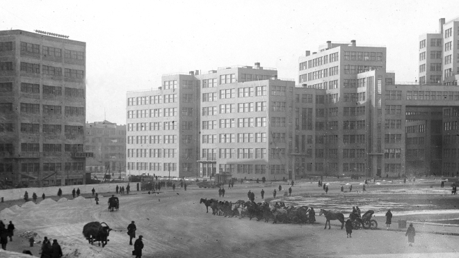

Перше радіомовлення
Історія українського радіо
Найцікавіше про українське радіо

Алло! Говорить Харків! Перша столиця України!
Українське радіо - перший мовник України, який з’явився 100 років тому та пройшов разом з нею найскладніші виклики!